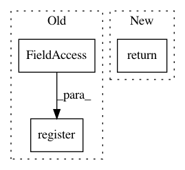

a31ae1708b62413c94ffae9fb6aab21b37f78212,petastorm/spark/spark_dataset_converter.py,,_cache_df_or_retrieve_cache_path,#Any#Any#Any#Any#,70
Before Change
.option("compression", compression_codec) \
.option("parquet.block.size", row_group_size) \
.parquet(save_to_dir)
atexit.register(shutil.rmtree, save_to_dir, True)
return save_to_dir
After Change
cached_df_meta = CachedDataFrameMeta.create_cached_dataframe(
df, parent_cache_dir, row_group_size, compression_codec)
_cache_df_meta_list.append(cached_df_meta)
return cached_df_meta.data_path
def _materialize_df(df, parent_cache_dir, row_group_size, compression_codec):
uuid_str = str(uuid.uuid4())
In pattern: SUPERPATTERN
Frequency: 3
Non-data size: 3
Instances
Project Name: uber/petastorm
Commit Name: a31ae1708b62413c94ffae9fb6aab21b37f78212
Time: 2020-03-12
Author: weichen.xu@databricks.com
File Name: petastorm/spark/spark_dataset_converter.py
Class Name:
Method Name: _cache_df_or_retrieve_cache_path
Project Name: snipsco/snips-nlu
Commit Name: d88e1e112a70f7cd5eea03298f07189681520f47
Time: 2019-01-02
Author: adrien.ball@snips.ai
File Name: snips_nlu/pipeline/units_registry.py
Class Name:
Method Name: register_processing_unit
Project Name: Ambrosys/glyph
Commit Name: 2929b0f3738c43f52c32a37bf40791c88e3d9929
Time: 2017-02-24
Author: mquade@uni-potsdam.de
File Name: glyph/gp/individual.py
Class Name: AExpressionTree
Method Name: create_population